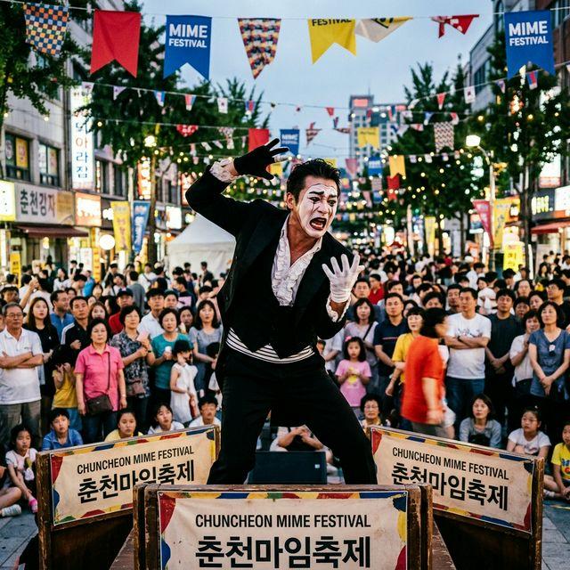
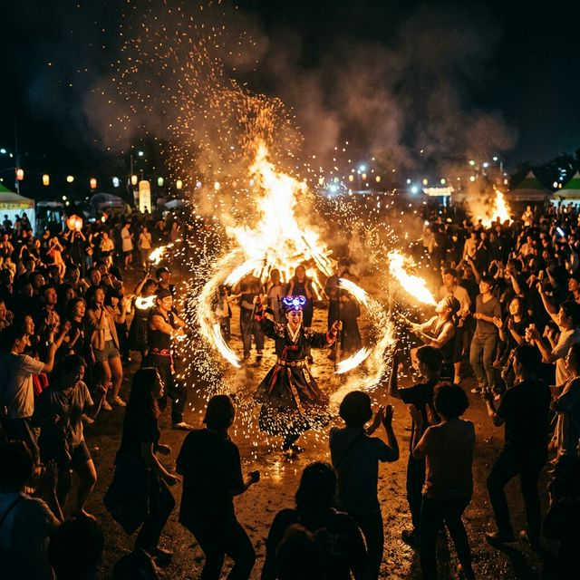
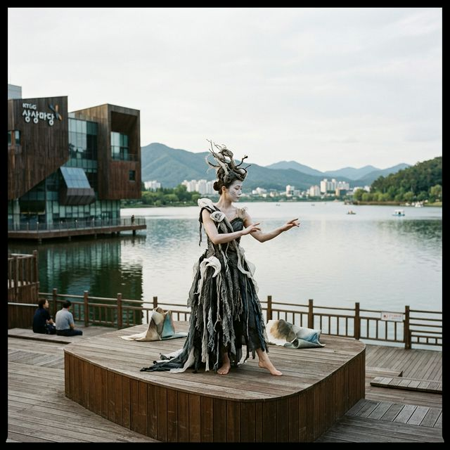

춘천 마임축제 2026 일정 및 프로그램 불의도시 도깨비난장 완벽 관람 가이드
"몸으로 그리는 풍경, 춘천의 거리가 거대한 무대가 된다!"
호반의 도시 춘천이 5월의 마지막을 화려한 예술의 열기로 물들입니다. 세계 3대 마임축제 중 하나로 손꼽히는 '2026 춘천 마임축제'가
"몸풍경"을 주제로 한층 더 파격적이고 혁신적인 모습으로 돌아왔습니다. 언어의 장벽을 넘어 인간의 몸짓만으로 감동을 전하는 마임 아티스트들의 열정적인 공연부터, 밤새도록
이어지는 불과 예술의 난장까지! 평범했던 도시의 일상이 예술로 변하는 마법 같은 순간을 춘천에서 직접 경험해 보세요.
1. 2026 춘천 마임축제 일정 및 장소 정보
올해로 제38회를 맞이하는 춘천 마임축제는 2026년 5월 24일부터 5월 31일까지 8일간 춘천시 전역에서 펼쳐집니다. 축제의 시작을 알리는 개막 난장 '아!水라장'이
열리는 춘천 중앙로를 비롯하여, 축제극장 몸짓, 공지천 산책로, 그리고 축제의 하이라이트인 도깨비 난장이 펼쳐지는 레고랜드 주차장 일원까지 도시 전역이 축제의 장으로 변신합니다.
이번 축제는 '정적인 공연'의 틀을 깨고 관객이 직접 아티스트와 호흡하며 도심 속을 탐험하는 '장소 특정적 퍼포먼스'를 강화했습니다. 또한, 상상마당 춘천과 같은 지역의 상징적인 문화 공간들과 연계하여
더욱 다채로운 예술적 변주를 선보일 예정입니다. 초여름의 길목에서 춘천의 시원한 강바람과 함께 즐기는 예술 여행은 여러분의 일상에 새로운 활력을 불어넣어 줄 것입니다.
축제 기간 동안 춘천 시내는 교통 통제와 행사장 운영으로 다소 혼잡할 수 있으니, 공식 홈페이지에서 배포하는 '축제 지도'를 미리 확인하시는 것이 좋습니다. 춘천역에서 행사장까지 운영되는 셔틀버스를
이용하면 더욱 편리하게 예술의 현장으로 진입할 수 있습니다. 8일간 이어지는 이 특별한 예술의 항해에 여러분을 초대합니다.

춘천 중앙로를 가득 메운 열정적인 마임 거리공연 현장 / AI 제작 이미지
2. 축제의 심장, '불의도시: 도깨비난장' 밤샘 예술 파티
춘천 마임축제의 정체성을 가장 잘 보여주는 킬러 콘텐츠는 단연 '불의도시: 도깨비난장'입니다. 금요일과 토요일 밤, 해가 지면서 시작되어 다음 날 새벽까지 이어지는 이
밤샘 난장은 불과 예술, 그리고 관객의 에너지가 폭발하는 환상적인 공간입니다. 거대한 불기둥과 화려한 불꽃쇼, 그리고 그 사이를 누비는 마임 아티스트들의 기괴하면서도 역동적인 움직임은 흡사 꿈속을
헤매는 듯한 기분을 선사합니다.
도깨비난장에서는 정해진 좌석이 없습니다. 관객들은 자유롭게 돌아다니며 곳곳에서 동시다발적으로 일어나는 퍼포먼스를 감상하고, 때로는 직접 도깨비가 되어 춤을 추며 축제의 일원이 됩니다. 지역 맥주와
먹거리가 가득한 푸드존도 운영되어 새벽까지 지치지 않고 예술의 열기를 즐길 수 있습니다. 일상의 억눌린 감정을 불과 함께 태워버리고 싶은 분들이라면 도깨비난장은 필수 코스입니다.
밤샘 행사인 만큼 개인의 컨디션 조절과 보온 대책이 중요합니다. 춘천의 밤바람은 5월 말에도 꽤 쌀쌀할 수 있으니 가벼운 담요나 겉옷을 준비하는 것이 좋습니다. 예술로 하나 되는 이 특별한 밤, 춘천의
하늘을 수놓는 불꽃과 아티스트들의 몸짓 속에서 잊고 있었던 잠재된 에너지를 발견해 보세요.
3. 물로 여는 개막 난장 '아!水라장'의 시원한 에너지
축제의 서막은 춘천 중앙로를 가득 메우는 '아!水라장'으로 화려하게 시작됩니다. 소방차에서 뿜어져 나오는 물줄기와 시민들이 던지는 물풍선 속에서 모두가 동심으로 돌아가
물놀이를 즐기는 이 개막 행사는 '해방과 자유'라는 축제의 정신을 몸소 보여줍니다. 정장에 넥타이를 맨 직장인도, 시험 공부에 지친 학생도 물세례 앞에서는 평등한 축제객이 됩니다.
단순한 물놀이를 넘어, 물줄기 사이사이로 펼쳐지는 아티스트들의 퍼포먼스는 시각적인 쾌감을 극대화합니다. 물방울이 햇살에 반짝이며 아티스트의 몸짓과 어우러지는 장면은 춘천 마임축제에서만 볼 수 있는
장관입니다. 젖어도 좋은 옷과 여분의 의복을 준비했다면 주저하지 말고 물의 난장 속으로 뛰어드세요.
행사 구역 내에는 탈의실과 물 보관함 등 편의시설이 마련되어 운영됩니다. 시민과 관광객, 그리고 아티스트가 물이라는 매개체로 하나가 되어 도심의 온도를 낮추고 열정을 높이는 이 시간은 영주나 하동의
정적인 축제와는 또 다른 다이나믹한 매력을 선사합니다. 여름의 시작을 춘천의 시원한 수라장에서 함께 맞이해 보시기 바랍니다.

불과 예술이 어우러지는 화려한 도깨비난장의 밤샘 풍경 / AI 제작 이미지
4. 걷다 보는 마임: 석사천과 공지천 산책로의 예술 풍경
활동적인 난장이 부담스럽다면 춘천의 아름다운 산책로를 따라 펼쳐지는 '걷다 보는 마임' 프로그램을 추천합니다. 석사천이나 공지천 산책로를 걷다 보면 다리 밑, 나무 사이,
벤치 옆에서 예기치 않게 아티스트들을 마주하게 됩니다. 일상의 창길이 예술의 무대로 변하는 순간입니다.
이 프로그램은 자연과 예술의 조화를 중시합니다. 강물 소리와 새소리가 들리는 자연 속에서 조용히 움직이는 마임이스트의 몸짓은 관객들에게 명상에 가까운 평온함을 선사합니다. 반려견과 함께 산책하거나
아이들의 손을 잡고 걷다가 잠시 멈춰 서서 예술을 향유하는 여유는 춘천 여행의 질을 높여줍니다.
특히 해 질 녘 공지천의 노을을 배경으로 펼쳐지는 공연은 감성을 자극하는 최고의 포토존이 됩니다. 자전거를 타고 가다 멈춘 시민들도, 벤치에 앉아 쉬던 어르신들도 모두가 예술의 관객이 되는 이 풍경은
춘천이 왜 '문화의 도시'인지를 증명합니다. 천천히 걸으며 우연히 만나는 예술의 행운을 춘천 산책길에서 누려보세요.
5. 상상마당 춘천: 호숫가에서 즐기는 우아한 예술 휴식
KT&G 상상마당 춘천은 마임축제의 우아한 거점 공간입니다. 의암호의 비경을 품고 있는 이곳은 축제 기간 동안 실내외 공연장에서 품격 있는 마임 공연들을 선보입니다. 특히 실험적인 시도가 돋보이는 신진
아티스트들의 공연과 가족 단위 관객을 위한 실내 마임극 등이 중점적으로 배치됩니다.
상상마당 내 카페와 전시장을 이용하며 공연 전후로 여유로운 시간을 보낼 수 있는 것도 장점입니다. 호수가 보이는 야외 공연장에서 펼쳐지는 무언극은 마치 한 편의 영화를 보는 듯한 세련된 분위기를
자아냅니다. 난장의 떠들썩함보다는 예술의 깊이를 차분히 느끼고 싶은 분들께 가장 적합한 공간입니다.
상상마당 춘천은 그 자체로도 영주의 소수서원처럼 역사적인 건축물(구 어린이회관)의 가치를 지니고 있어 건축과 예술을 함께 감상하기에 좋습니다. 축제 기간 중 진행되는 특별 워크숍에 참여하여 직접 마임의
기초를 배워보거나 아티스트와 대화를 나누는 코너도 마련되니 예술가와 더 가까워지는 기회를 가져보시기 바랍니다.
6. 어린이와 가족을 위한 체험: '도깨비 유랑단'의 활약
아이들에게 마임은 가장 직관적이고 재미있는 놀이입니다. 축제 곳곳을 누비는 '도깨비 유랑단'은 어린이들의 눈높이에 맞춰 익살스러운 표정과 몸짓으로 아이들의 마음을 단숨에
사로잡습니다. 대사가 없기에 오히려 아이들은 아티스트의 의도를 더 세심하게 상상하며 무궁무진한 창의력을 발휘하게 됩니다.
축제 현장 곳곳에는 아이들이 직접 페이스 페인팅을 하거나 간단한 마임 도구를 만들어보는 체험 부스들이 설치됩니다. 또한, 아이들의 움직임을 따라 하며 함께 춤을 추는 참여형 공연들은 소극적인 아이들도
축제의 주인공이 될 수 있게 도와줍니다. 가족 모두가 함께 웃으며 박수 칠 수 있는 행복한 에너지가 춘천에 가득합니다.
어린이날보다 조금 늦은 일정이라 아쉬울 수 있지만, 오히려 여유로운 5월의 마지막 주말을 이용해 가족만의 특별한 나들이를 즐기기에 좋습니다. 아이들의 상상력을 자극하고 온 가족이 공감대를 형성할 수
있는 최적의 콘텐츠, 춘천 마임축제에서 아이들에게 '말보다 강한 몸짓'의 감동을 선물해 보세요.

의암호 배경의 상상마당 춘천에서 펼쳐지는 아방가르드 마임 공연 / AI 제작 이미지
7. 춘천 마임축제 티켓 예매 및 할인 꿀팁
춘천 마임축제의 대부분의 거리 공연은 무료로 즐길 수 있지만, 도깨비난장이나 극장 공연은 유료 티켓을 별도로 구매해야 합니다. 인기 있는
극장 공연은 조기 매감될 수 있으므로 공식 홈페이지(mimefestival.com)나 '망고티켓'을 통해 사전 예매를 진행하시는 것을 강력히 권장합니다.
할인 혜택도 꼼꼼히 체크해 보세요. 춘천 시민 할인뿐만 아니라 대학생 할인, 그리고 닭갈비 영수증을 지참할 경우 할인을 제공하는 등의 지역 상생 이벤트가 자주 열립니다. 또한, 2026년에는 이마트24
앱을 통해 축제 티켓 증정 프로모션도 진행될 예정이니 앱을 통한 이벤트 참여도 좋은 방법입니다.
난장 티켓의 경우 현장 구매도 가능하지만 온라인 예매 시 가격이 더 저렴하고 대기 시간도 단축할 수 있습니다. 축제 관련 패키지 상품을 이용하면 공연 티켓과 함께 춘천의 다른 관광지 입장권을 저렴하게
묶어 구매할 수도 있습니다. 알뜰한 예매 전략으로 예술의 즐거움을 두 배로 늘려보세요.
8. 축제와 함께 즐기는 춘천의 맛과 여행지
춘천에 왔다면 닭갈비와 막국수는 빼놓을 수 없는 미식 코스입니다. 축제장 인근의 명동 닭갈비 골목도 좋지만, 최근에는 육림고개 주변의 트렌디한 맛집들도 젊은 여행자들에게
각광받고 있습니다. 공연 중간중간 춘천의 맛을 즐기며 에너지를 보충하는 것은 축제를 끝까지 즐기기 위한 필수 과정입니다.
시간적 여유가 있다면 소양강 스카이워크를 걷거나 국내 최장 길이의 삼악산 호수 케이블카를 타고 춘천의 전경을 내려다보는 것도 추천합니다. 영주의 선비 문화, 하동의 차 문화와는 또 다른 매력을 가진
춘천의 현대적이고 활기찬 기운은 여러분의 5월 여행 계획에 완벽한 마침표를 찍어줄 것입니다.
밤늦게까지 축제를 즐길 예정이라면 레고랜드 인근이나 춘천역 주변의 숙소를 미리 확보해 두시는 것이 좋습니다. 밤샘 난장 후 맞이하는 춘천의 새벽 공기는 그 어떤 곳에서도 느껴보지 못한 오묘한 설렘과
피로감을 선사하며, 다음 여행을 기약하게 만들 것입니다. 춘천의 모든 순간이 여러분에게 예술적인 기억으로 남길 바랍니다.
9. 맺음말: 몸으로 전하는 위로, 춘천에서 다시 시작하다
지금까지 2026 춘천 마임축제의 상세한 가이드를 전해드렸습니다. 마임은 복잡한 수식어 없이 본질적인 움직임만으로 우리에게 말을 겁니다. 때로는 격정적인 불꽃으로, 때로는
고요한 강가의 숨소리로 우리를 위로하는 아티스트들의 몸짓을 통해 지친 마음을 치유해 보시기 바랍니다.
영주의 전통, 하동의 자연에 이어 춘천의 예술로 완성되는 2026년 5월의 여정! 춘천 마임축제는 여러분의 상상이 현실이 되는 경험을 제공할 것입니다. 말이 필요 없는 감동, 그 뜨거운 현장으로 지금
떠날 준비를 해보세요. 춘천의 도깨비들이 여러분을 기다리고 있습니다!
#춘천마임축제
#2026축제일정
#불의도시
#도깨비난장
#춘천가볼만한곳
#5월여행지추천
#마임공연
#상상마당춘천
#아수라장
#가족여행추천